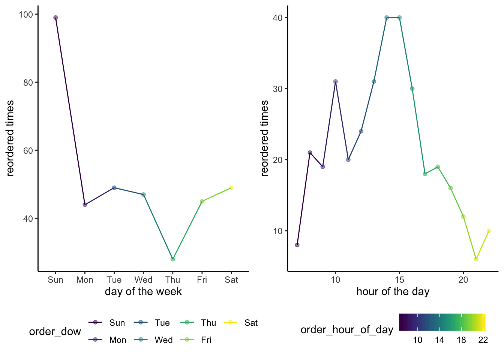

Here are some interactive graphs that I made with plotly!
library(tidyverse)## ── Attaching packages ──────────────────────────────────────────────── tidyverse 1.2.1 ──## ✔ ggplot2 3.2.1 ✔ purrr 0.3.2
## ✔ tibble 2.1.3 ✔ dplyr 0.8.3
## ✔ tidyr 1.0.0 ✔ stringr 1.4.0
## ✔ readr 1.3.1 ✔ forcats 0.4.0## ── Conflicts ─────────────────────────────────────────────────── tidyverse_conflicts() ──
## ✖ dplyr::filter() masks stats::filter()
## ✖ dplyr::lag() masks stats::lag()library(viridis)## Loading required package: viridisLitelibrary(patchwork)
library(p8105.datasets)
library(plotly)##
## Attaching package: 'plotly'## The following object is masked from 'package:ggplot2':
##
## last_plot## The following object is masked from 'package:stats':
##
## filter## The following object is masked from 'package:graphics':
##
## layoutdata("instacart")set.seed(1)
data(instacart)
instacart =
instacart %>%
select(reordered, order_dow, order_hour_of_day, days_since_prior_order, product_name, aisle) %>%
mutate(order_dow = as.factor(order_dow),
order_dow = recode(order_dow,
"0" = "Sun", "1" = "Mon", "2" = "Tue", "3" = "Wed",
"4" = "Thu", "5" = "Fri", "6" = "Sat")) %>%
filter(aisle %in% c("fresh fruits")) %>%
sample_n(500)instacart %>%
group_by(product_name) %>%
summarise(reordered_times = sum(reordered)) %>%
filter(reordered_times > 5) %>%
mutate(product_name = fct_reorder(product_name, reordered_times)) %>%
plot_ly(x = ~product_name, y = ~reordered_times, type = "bar") %>%
layout(title = "Number of times that a fresh fruit has been reordered.", xaxis = list(title = "product name"), yaxis = list(title = "reordered times"))instacart %>%
group_by(product_name) %>%
mutate(reordered_times = sum(reordered)) %>%
filter(reordered_times > 5) %>%
plot_ly(x = ~product_name, y = ~order_hour_of_day, type = "box", color = ~product_name, colors = "Set2") %>%
layout(title = "Hour of the day that a fresh fruit is ordered.", xaxis = list(title = "product name"), yaxis = list(title = "hour of the day"))dow_data =
instacart %>%
group_by(order_dow) %>%
summarize(reordered_times = sum(reordered)) %>%
filter(reordered_times > 5)
figure1 =
ggplot(dow_data, aes(x = order_dow, y = reordered_times, group = 1, color = order_dow)) +
geom_point(alpha = 0.5) +
geom_line() +
scale_color_viridis(discrete = TRUE) +
theme_classic() +
theme(legend.position = "bottom") +
labs(x = "day of the week", y = "reordered times")
hod_data =
instacart %>%
group_by(order_hour_of_day) %>%
summarize(reordered_times = sum(reordered)) %>%
filter(reordered_times > 5)
figure2 =
ggplot(hod_data, aes(x = order_hour_of_day, y = reordered_times, group = 1, color = order_hour_of_day)) +
geom_point(alpha = 0.5) +
geom_line() +
scale_color_viridis() +
theme_classic() +
theme(legend.position = "bottom") +
labs(x = "hour of the day", y = "reordered times")
figure = figure1 + figure2 + plot_layout(ncol = 2)
figure
ggplotly(figure)